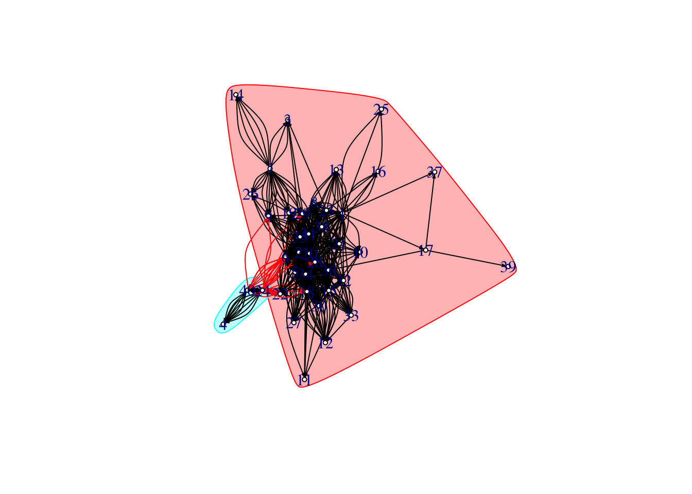
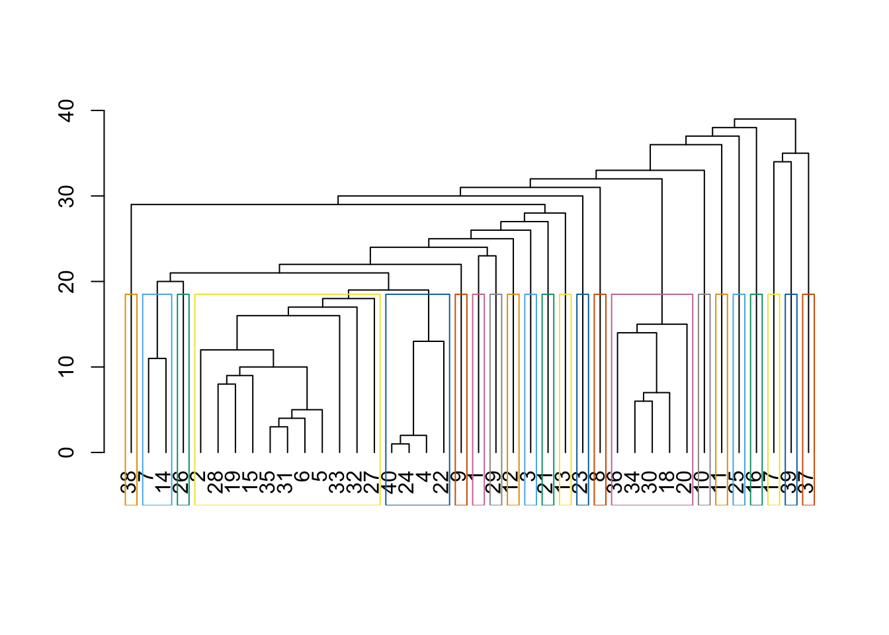
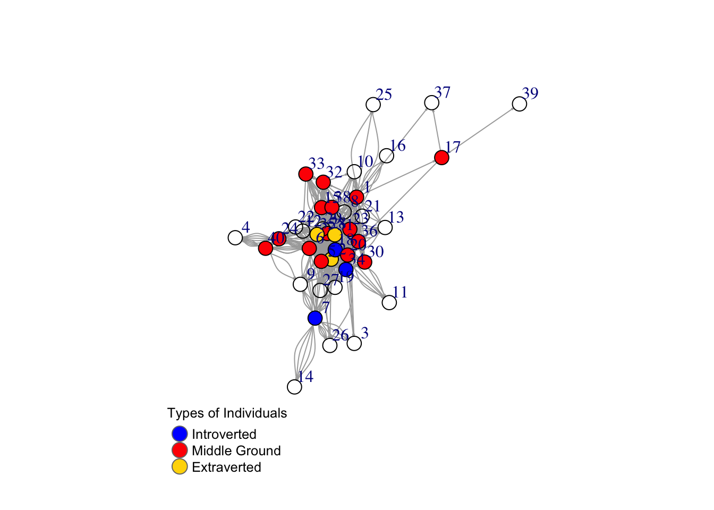

Network Analysis: BDS-516 Spring 2021
Electric Eels: Walid H., Aamia M., Michael M., Jon S., Cory W., Jen X.
BDS-516 HW10 | May 7, 2021
In this report, we are interested in conducting a network analysis among the BDS-516 Spring 2021 class. First, we import the data and set up the relevant libraries. (include = FALSE).
1) Prepare the data for the network analysis (create a separate edge and node list)
We begin with our separate node and edge lists, titled hw_nodelist and hw_edgelist.
Network graphical visualization
Next, we begin with some basic visualizations.
First, we can draw a few key insights from this visualization that plotted our nodes and edges:
This appears to resemble a scale-free network; unsurprisingly, some respondents do not know others in the network wel while others appear to know many others.
Respondent 39 appears to be the least connected to the rest of the network, as well as Respondent 14.
newnetwork <- graph_from_data_frame(d = hw_edgelist, vertices = hw_nodelist, directed = TRUE)
plot(newnetwork, edge.arrow.size = .3, vertex.size = 3, edge.curved=0)Clustering and more graphs
Second, we generated a Newman-Girvan graph, which sequentially removes high-betweeness edges to only leave behind the best partitioning of the network for the graph. This figure uses hierarchical clustering, identifying 22 unique clusters.
We also created a figure built on community detection, based on propagating labels. This figure assigns node labels, randomizes, and then replaces each label with the label that is most frequent among its neighbors; this process halts after each vertex has the most common label of its neighbors. this is for line 70-71; not exactly sure what it’s supposed to be showing
this is getting a ton of errors, need to figure out if they matter & what’s going on during 5/3 mtg AM
ceb <- cluster_edge_betweenness(newnetwork)
dendPlot(ceb, mode="hclust")
length(ceb)## [1] 22#plot(ceb, newnetwork, vertex.size = 3, edge.arrow.size = 0.2) this shows same info as previous line, not sure we need it
clp <- cluster_label_prop(newnetwork)
plot(clp, newnetwork, newnetwork, vertex.size = 3, edge.arrow.size = 0.2) ## Warning in symbols(x = coords[, 1], y = coords[, 2], bg = vertex.color, :
## supplied color is neither numeric nor character
## Warning in symbols(x = coords[, 1], y = coords[, 2], bg = vertex.color, :
## supplied color is neither numeric nor character
## Warning in symbols(x = coords[, 1], y = coords[, 2], bg = vertex.color, :
## supplied color is neither numeric nor character
## Warning in symbols(x = coords[, 1], y = coords[, 2], bg = vertex.color, :
## supplied color is neither numeric nor character
## Warning in symbols(x = coords[, 1], y = coords[, 2], bg = vertex.color, :
## supplied color is neither numeric nor character
## Warning in symbols(x = coords[, 1], y = coords[, 2], bg = vertex.color, :
## supplied color is neither numeric nor character
## Warning in symbols(x = coords[, 1], y = coords[, 2], bg = vertex.color, :
## supplied color is neither numeric nor character
## Warning in symbols(x = coords[, 1], y = coords[, 2], bg = vertex.color, :
## supplied color is neither numeric nor character
## Warning in symbols(x = coords[, 1], y = coords[, 2], bg = vertex.color, :
## supplied color is neither numeric nor character
## Warning in symbols(x = coords[, 1], y = coords[, 2], bg = vertex.color, :
## supplied color is neither numeric nor character
#Jon, what do the colors mean? Are all of these just clusters? If so, based on what exactly? -jX2) Calculate measures of centrality and similarity in networks depending on the type of tie. Which tie type generates the most similar network in terms of introversion? Which tie type is the most dissimilar?
We begin with high-level network and node descriptives.
The density of the network is 0.44, which is the proportion of all present edges (i.e., connections) from all possible edges in the network. At a broad level, we can understand this value as indicating that not everyone who took the survey is connected.
The network has a reciprocity and a (global) transitivity of ~0.5, suggesting that about half of the time, a respondent in the network indicated being directly and indirectly tied to someone else, when the respondent on the other end did not agree. This may partially be the result of measurement error.
The longest geodesic distance, network diameter, is five.
Lastly, the average node degree using all is 34.65.
#DENSITY = proportion of present edges from all possible edges in the network.
#(connections are edges?? someone confirm -JX)
edge_density(newnetwork, loops=F) ## [1] 0.4442308#RECIPROCITY = proportion of reciprocated ties (for a directed network).
reciprocity(newnetwork)## [1] 0.4992785#GLOBAL TRANSITIVITY
#• global - ratio of triangles (direction disregarded) to connected triples.
transitivity(newnetwork, type="global")## [1] 0.5005313#DIAMETER = longest geodesic distance (length of the shortest path between two nodes) in the network
diameter(newnetwork, directed=F, weights=NA)## [1] 5#NODE DEGREES
#has a mode of in for in-degree, out for out-degree, and all or total for total degree.
deg <- degree(newnetwork, mode="all")
mean(deg)## [1] 34.65hist(deg, breaks = 20, main="Histogram of node degree")
Here, we begin centrality functions: we assess degree, closeness, the eigenvector, and betweenness. comments needed, see the NetSciX PDF to interpret values
For degree, which lists the number of ties, the output centralization is .735 and the thoretical maximum of ties is 1560.
If we examine centrality based on distacne to others in the graph, closeness, we view that the centrality score is 0.434 and the theoretical maximum of this is 19.25.
For the eigenvector, which is centrality proportional to the sum of connection centralities, the centrality score is 0.67 (values of the first eigenvector) and the theoretical maximum is 39.
Finally, for betweenness, the centrality value is 0.12.
#Degree (number of ties)
degree(newnetwork, mode="in")## 1 2 3 4 5 6 7 8 9 10 11 12 13 14 15 16 17 18 19 20 21 22 23 24 25 26
## 9 36 6 10 38 41 1 24 14 10 6 18 12 5 12 4 1 46 28 23 20 29 10 7 3 8
## 27 28 29 30 31 32 33 34 35 36 37 38 39 40
## 16 43 37 18 32 13 13 28 25 27 2 9 1 8centr_degree(newnetwork, mode="in", normalized=T)## $res
## [1] 9 36 6 10 38 41 1 24 14 10 6 18 12 5 12 4 1 46 28 23 20 29 10 7 3
## [26] 8 16 43 37 18 32 13 13 28 25 27 2 9 1 8
##
## $centralization
## [1] 0.7352564
##
## $theoretical_max
## [1] 1560#Closeness (centrality based on distance to others in the graph)
#Inverse of the node’s average geodesic distance to others in the network.
closeness(newnetwork, mode="all", weights=NA) ## 1 2 3 4 5 6
## 0.017857143 0.016129032 0.011494253 0.008620690 0.013698630 0.016666667
## 7 8 9 10 11 12
## 0.012987013 0.015151515 0.013513514 0.013698630 0.011363636 0.012658228
## 13 14 15 16 17 18
## 0.012345679 0.008695652 0.014285714 0.012195122 0.011627907 0.015384615
## 19 20 21 22 23 24
## 0.014492754 0.016393443 0.014705882 0.013333333 0.015151515 0.012500000
## 25 26 27 28 29 30
## 0.010638298 0.011494253 0.012820513 0.018867925 0.015873016 0.012987013
## 31 32 33 34 35 36
## 0.015625000 0.013698630 0.012500000 0.015384615 0.016129032 0.015384615
## 37 38 39 40
## 0.010869565 0.014492754 0.008064516 0.010989011centr_clo(newnetwork, mode="all", normalized=T)## $res
## [1] 0.6964286 0.6290323 0.4482759 0.3362069 0.5342466 0.6500000 0.5064935
## [8] 0.5909091 0.5270270 0.5342466 0.4431818 0.4936709 0.4814815 0.3391304
## [15] 0.5571429 0.4756098 0.4534884 0.6000000 0.5652174 0.6393443 0.5735294
## [22] 0.5200000 0.5909091 0.4875000 0.4148936 0.4482759 0.5000000 0.7358491
## [29] 0.6190476 0.5064935 0.6093750 0.5342466 0.4875000 0.6000000 0.6290323
## [36] 0.6000000 0.4239130 0.5652174 0.3145161 0.4285714
##
## $centralization
## [1] 0.4335255
##
## $theoretical_max
## [1] 19.24675#Eigenvector (centrality proportional to the sum of connection centralities)
#Values of the first eigenvector of the graph matrix.
eigen_centrality(newnetwork, directed=T, weights=NA) ## $vector
## 1 2 3 4 5 6
## 0.171564157 0.868913434 0.048436700 0.032365907 1.000000000 0.870212863
## 7 8 9 10 11 12
## 0.028849600 0.514868572 0.151136996 0.157017774 0.118210711 0.414511768
## 13 14 15 16 17 18
## 0.201179387 0.005053097 0.260510658 0.048019707 0.006009999 0.944528593
## 19 20 21 22 23 24
## 0.616755681 0.458261803 0.326607971 0.515186512 0.204110310 0.079422926
## 25 26 27 28 29 30
## 0.018029996 0.101618061 0.458780359 0.823553811 0.580895651 0.421407616
## 31 32 33 34 35 36
## 0.832268800 0.202484729 0.186974701 0.633775180 0.602725153 0.576281907
## 37 38 39 40
## 0.006220533 0.222188740 0.000210534 0.105363457
##
## $value
## [1] 28.54646
##
## $options
## $options$bmat
## [1] "I"
##
## $options$n
## [1] 40
##
## $options$which
## [1] "LR"
##
## $options$nev
## [1] 1
##
## $options$tol
## [1] 0
##
## $options$ncv
## [1] 0
##
## $options$ldv
## [1] 0
##
## $options$ishift
## [1] 1
##
## $options$maxiter
## [1] 1000
##
## $options$nb
## [1] 1
##
## $options$mode
## [1] 1
##
## $options$start
## [1] 1
##
## $options$sigma
## [1] 0
##
## $options$sigmai
## [1] 0
##
## $options$info
## [1] 0
##
## $options$iter
## [1] 1
##
## $options$nconv
## [1] 1
##
## $options$numop
## [1] 20
##
## $options$numopb
## [1] 0
##
## $options$numreo
## [1] 19centr_eigen(newnetwork, directed=T, normalized=T)## $vector
## [1] 0.171564157 0.868913434 0.048436700 0.032365907 1.000000000 0.870212863
## [7] 0.028849600 0.514868572 0.151136996 0.157017774 0.118210711 0.414511768
## [13] 0.201179387 0.005053097 0.260510658 0.048019707 0.006009999 0.944528593
## [19] 0.616755681 0.458261803 0.326607971 0.515186512 0.204110310 0.079422926
## [25] 0.018029996 0.101618061 0.458780359 0.823553811 0.580895651 0.421407616
## [31] 0.832268800 0.202484729 0.186974701 0.633775180 0.602725153 0.576281907
## [37] 0.006220533 0.222188740 0.000210534 0.105363457
##
## $value
## [1] 28.54646
##
## $options
## $options$bmat
## [1] "I"
##
## $options$n
## [1] 40
##
## $options$which
## [1] "LR"
##
## $options$nev
## [1] 1
##
## $options$tol
## [1] 0
##
## $options$ncv
## [1] 0
##
## $options$ldv
## [1] 0
##
## $options$ishift
## [1] 1
##
## $options$maxiter
## [1] 1000
##
## $options$nb
## [1] 1
##
## $options$mode
## [1] 1
##
## $options$start
## [1] 1
##
## $options$sigma
## [1] 0
##
## $options$sigmai
## [1] 0
##
## $options$info
## [1] 0
##
## $options$iter
## [1] 1
##
## $options$nconv
## [1] 1
##
## $options$numop
## [1] 20
##
## $options$numopb
## [1] 0
##
## $options$numreo
## [1] 19
##
##
## $centralization
## [1] 0.6714227
##
## $theoretical_max
## [1] 39#Betweenness (centrality based on a broker position connecting others)
#Number of geodesics that pass through the node or the edge.
betweenness(newnetwork, directed=T, weights=NA) ## 1 2 3 4 5 6
## 84.0616886 28.5512815 0.0000000 0.0000000 13.1250010 91.5637434
## 7 8 9 10 11 12
## 22.3636950 0.0000000 0.0000000 0.0000000 0.0000000 0.0000000
## 13 14 15 16 17 18
## 0.0000000 0.0000000 15.5350122 0.0000000 20.0000000 68.0050823
## 19 20 21 22 23 24
## 0.0000000 55.4739079 0.0000000 0.0000000 11.2174072 18.5381747
## 25 26 27 28 29 30
## 0.0000000 0.0000000 0.0000000 197.9156390 0.0000000 1.2811184
## 31 32 33 34 35 36
## 23.4809215 4.4627833 0.2936508 28.2161521 22.9380115 48.1758511
## 37 38 39 40
## 0.0000000 6.1281513 0.0000000 12.6727273edge_betweenness(newnetwork, directed=T, weights=NA) ## [1] 1.6505897 4.5244509 0.5000000 0.5000000 2.1335498 0.7833333
## [7] 0.7833333 0.8383863 0.8383863 0.8383863 1.6059523 1.6059523
## [13] 40.0000000 1.0500000 2.1688734 2.1688734 0.3333333 0.3333333
## [19] 0.3333333 7.0000000 7.0000000 7.0000000 1.7706349 1.7706349
## [25] 1.7706349 1.7706349 0.2500000 0.2500000 0.2500000 0.2500000
## [31] 1.9579640 1.4554390 1.4517554 2.0603698 1.9374451 1.0630542
## [37] 1.0630542 20.0000000 0.5213413 0.5213413 0.5213413 0.5213413
## [43] 0.5213413 1.7620846 1.7620846 1.7620846 1.7620846 1.7620846
## [49] 0.5776515 0.5776515 0.5776515 0.9822442 0.9822442 0.9822442
## [55] 0.9822442 0.9822442 0.5759804 0.5759804 0.5759804 1.0872253
## [61] 1.0872253 6.3644784 0.6500954 0.6500954 0.6500954 0.6500954
## [67] 0.6500954 3.1269238 3.1269238 3.1269238 3.1269238 3.1269238
## [73] 0.3237330 0.3237330 0.3237330 0.3237330 0.3237330 1.4166415
## [79] 1.4166415 1.4166415 1.4166415 1.4166415 2.6174745 2.6174745
## [85] 1.6002973 1.6002973 1.6002973 1.6002973 0.5166342 0.5166342
## [91] 0.5166342 0.5166342 1.1527813 1.1527813 1.1527813 1.1527813
## [97] 1.1527813 1.4288942 1.4288942 1.4288942 0.9132042 0.9132042
## [103] 0.9132042 0.9132042 0.3750000 0.3750000 0.3750000 0.3750000
## [109] 5.6359992 0.8166937 0.8166937 2.6515139 2.6515139 2.6515139
## [115] 2.6515139 2.6515139 0.9359955 0.9359955 0.9359955 0.9359955
## [121] 0.9359955 1.6197930 1.6197930 1.6197930 0.9577492 0.9577492
## [127] 0.9577492 0.9577492 0.9577492 0.9544814 0.9544814 0.9544814
## [133] 0.9544814 0.9544814 1.0255680 1.0255680 1.0255680 1.0255680
## [139] 1.0255680 1.0857008 1.0857008 1.0857008 3.9759897 2.3533333
## [145] 3.1054258 0.6047794 0.6047794 0.6047794 0.6047794 6.5801588
## [151] 13.3000000 13.3000000 2.6606236 8.2179232 8.2179232 1.3139878
## [157] 1.5002414 1.5002414 1.5002414 1.5002414 1.5002414 6.0220118
## [163] 1.5531930 1.5531930 1.5531930 1.5531930 1.5531930 10.2242424
## [169] 10.2242424 10.2242424 3.3646187 3.3646187 0.6615792 0.6615792
## [175] 0.6615792 6.8688915 0.3642857 0.3642857 0.3642857 0.3642857
## [181] 4.2000000 4.2000000 4.2000000 4.2000000 4.2000000 0.2500000
## [187] 0.2500000 0.2500000 0.2500000 0.4804537 0.4804537 0.4804537
## [193] 0.4804537 9.7009356 9.7009356 0.3333333 0.3333333 0.3333333
## [199] 9.0002615 1.3333333 0.3366667 0.3366667 0.3366667 0.3366667
## [205] 1.6534565 1.6534565 1.6534565 1.6534565 1.6534565 1.4030449
## [211] 0.8611111 0.8611111 1.7675114 1.7675114 1.7675114 1.7675114
## [217] 2.1231302 2.1231302 2.1231302 2.1231302 2.1231302 0.6907631
## [223] 0.6907631 0.7891004 0.7891004 0.7891004 0.7891004 0.7891004
## [229] 0.7210990 0.7210990 0.7210990 0.7210990 2.7825400 2.7825400
## [235] 37.0000000 1.0000000 21.0000000 0.8507595 0.8507595 0.8507595
## [241] 0.8507595 0.8507595 0.8862487 0.8862487 0.8862487 0.8862487
## [247] 0.8862487 4.9192929 4.9192929 1.2125000 10.9121684 1.2884342
## [253] 1.2884342 1.2884342 1.2884342 3.9063802 3.9063802 2.3250360
## [259] 2.3250360 2.3250360 2.3250360 2.3250360 1.4177979 1.4177979
## [265] 3.6233599 3.6233599 3.6233599 3.6233599 3.6233599 2.0448040
## [271] 2.0448040 2.0448040 2.0448040 2.0448040 3.3041914 3.3041914
## [277] 0.7945045 0.7945045 0.7945045 0.7945045 0.7945045 4.7445760
## [283] 1.0526427 1.0526427 1.0526427 1.0526427 1.0526427 11.7823815
## [289] 11.7823815 5.3123728 6.7734857 0.5000000 0.5000000 1.5366681
## [295] 1.5366681 1.5366681 1.5031056 1.6242095 1.6242095 1.6242095
## [301] 1.1717939 1.1717939 1.1717939 0.7641934 0.7641934 0.7641934
## [307] 0.7641934 0.9815062 0.9815062 0.4711538 0.4711538 0.4711538
## [313] 0.4711538 1.0107906 1.0107906 1.0107906 1.0107906 3.5388539
## [319] 3.5388539 4.1855559 4.1855559 4.1855559 0.3935743 0.3935743
## [325] 0.3935743 0.6415974 0.6415974 0.6415974 0.6415974 0.5031227
## [331] 0.5031227 0.5031227 0.5031227 4.8179129 0.5406777 0.5406777
## [337] 0.5406777 0.5406777 8.2088002 3.0001645 5.9377289 4.8881886
## [343] 1.0000000 2.0218656 2.7202551 2.8787879 2.9771457 2.9771457
## [349] 1.1000000 1.0000000 5.1533512 0.3333333 0.3333333 0.3333333
## [355] 2.1432845 3.2106893 1.7200000 1.7200000 1.7200000 1.7200000
## [361] 1.7200000 1.6084451 1.6084451 1.6084451 1.6084451 1.6084451
## [367] 4.1512883 4.1512883 4.1512883 0.2000000 0.2000000 0.2000000
## [373] 0.2000000 0.2000000 11.8263053 11.8263053 0.5964912 0.5964912
## [379] 0.5964912 0.4000000 0.4000000 0.4000000 0.4000000 0.4000000
## [385] 13.3304529 13.3304529 13.3304529 13.3304529 1.2962108 1.2962108
## [391] 1.2962108 1.1474012 1.1474012 1.1474012 1.1474012 1.1474012
## [397] 2.7302445 2.7302445 2.7302445 2.7302445 2.7302445 42.3636950
## [403] 1.6932765 5.5729742 1.6223918 1.6223918 1.6223918 1.7020119
## [409] 1.7020119 1.7020119 1.7020119 1.7020119 14.9093076 1.1034422
## [415] 1.1034422 1.1034422 1.1034422 1.1034422 0.9208333 0.9208333
## [421] 0.9208333 0.9208333 0.9208333 6.7985557 2.2107372 1.1485294
## [427] 1.1485294 1.1485294 1.1485294 4.0482591 4.0482591 1.7046450
## [433] 1.7046450 1.7046450 1.7046450 0.6396060 0.6396060 0.6396060
## [439] 1.5914597 1.5914597 1.5914597 1.5914597 1.5914597 2.7458405
## [445] 2.7458405 2.7458405 2.7458405 3.1902677 3.1902677 3.1902677
## [451] 3.1902677 3.1076192 3.1097081 1.9613573 1.9613573 1.0000000
## [457] 1.5745342 1.3939394 2.4659305 2.4659305 2.4659305 2.4659305
## [463] 2.4659305 3.2761512 3.2761512 3.2761512 3.2761512 1.2524038
## [469] 1.0602410 1.1387964 1.1387964 1.1387964 1.1387964 1.1387964
## [475] 0.7179402 0.7179402 0.7179402 0.7179402 0.5444444 0.5444444
## [481] 0.5444444 0.5444444 0.5403530 0.5403530 0.5403530 0.5403530
## [487] 0.5403530 0.9871622 0.9871622 0.9871622 0.9871622 0.9871622
## [493] 0.3281250 0.3281250 0.3281250 0.3281250 2.7389270 2.6328453
## [499] 2.6328453 2.6328453 2.3384866 2.3384866 1.0950000 1.2170330
## [505] 0.8436683 0.8436683 2.6731548 2.6731548 1.2413690 4.2964805
## [511] 4.2964805 0.4367948 0.4367948 0.4367948 0.5176471 0.5176471
## [517] 0.5176471 0.5176471 0.5176471 3.2400007 3.2400007 3.2400007
## [523] 3.2400007 1.3333333 1.9166667 1.1704624 2.0989899 2.0989899
## [529] 1.3333333 6.3295984 6.3295984 6.3295984 1.1666667 0.4166667
## [535] 0.4166667 0.4166667 6.4491241 5.6564218 1.1269841 6.9628833
## [541] 27.6337658 3.5700176 1.1573033 1.1573033 7.7651608 1.0969881
## [547] 1.0969881 1.0969881 1.0969881 1.0969881 7.1765871 1.0468750
## [553] 4.0998206 3.8212637 5.3310743 0.4478716 0.4478716 0.4478716
## [559] 0.4478716 0.4478716 0.6868093 0.6868093 0.6868093 0.6868093
## [565] 0.6868093 1.9561823 1.9561823 1.9561823 1.9561823 8.9795290
## [571] 1.1078600 0.7637139 0.7637139 0.7637139 0.7637139 0.7637139
## [577] 0.6929329 0.6929329 0.6929329 0.6929329 0.6875186 0.6875186
## [583] 0.6875186 0.6875186 0.6623529 0.6623529 0.6623529 0.6623529
## [589] 0.6623529 1.2456280 1.2456280 1.2456280 1.2456280 1.2456280
## [595] 1.0781250 2.1422517 2.1422517 2.1422517 2.3383058 4.1099594
## [601] 1.1725000 1.1978022 0.8492239 0.8492239 4.1243750 1.3704545
## [607] 6.6241323 1.0914133 0.4660714 0.4660714 0.4660714 0.4660714
## [613] 0.4660714 2.9172569 2.6336297 2.6336297 2.6336297 2.6336297
## [619] 2.6336297 5.6472148 5.6472148 2.0000000 2.7888199 1.5241459
## [625] 1.5241459 2.5245288 2.5245288 4.2149222 4.2149222 4.2149222
## [631] 4.2149222 5.8672931 5.8672931 5.8672931 5.8672931 2.2211538
## [637] 2.0125541 2.0125541 2.0602410 1.1680349 1.1680349 1.1680349
## [643] 1.1680349 2.4219370 2.4219370 2.4219370 2.4219370 9.9660521
## [649] 1.2176761 1.2176761 1.2176761 1.2412450 1.2412450 1.2412450
## [655] 1.0000000 1.0000000 2.7713062 2.7713062 2.7713062 0.5000000
## [661] 0.5000000 5.1889302 0.5000000 0.5000000 1.0730811 1.0730811
## [667] 1.0730811 1.5912054 1.9464286 0.8814024 0.8814024 0.8814024
## [673] 0.8814024 2.4800000 2.4800000 2.4800000 2.4800000 2.4800000
## [679] 6.0154563 6.0154563 6.0154563 6.0154563 1.1363636 1.1363636
## [685] 0.2500000 0.2500000 0.2500000 0.2500000 2.3876349 2.3876349
## [691] 2.3876349 2.3876349 2.3876349centr_betw(newnetwork, directed=T, normalized=T)## $res
## [1] 84.0616886 28.5512815 0.0000000 0.0000000 13.1250010 91.5637434
## [7] 22.3636950 0.0000000 0.0000000 0.0000000 0.0000000 0.0000000
## [13] 0.0000000 0.0000000 15.5350122 0.0000000 20.0000000 68.0050823
## [19] 0.0000000 55.4739079 0.0000000 0.0000000 11.2174072 18.5381747
## [25] 0.0000000 0.0000000 0.0000000 197.9156390 0.0000000 1.2811184
## [31] 23.4809215 4.4627833 0.2936508 28.2161521 22.9380115 48.1758511
## [37] 0.0000000 6.1281513 0.0000000 12.6727273
##
## $centralization
## [1] 0.1235791
##
## $theoretical_max
## [1] 57798Next, we assess similarity. As we first saw in the dataset hw_edgelist, there are five tie types that simply range 1, 2, 3, 4, and 5, The options for each tie were articulated as being the following:
I have texted in the last 7 days
I have met during my time in MBDS
Is my friend
I ask for advice/help
Asks me for help/advice
The first tie, which concerns having texted another person within the last seven days, is the characteristic that produces the most similar network in terms of introversion. The third tie, is my friend, as well as the second tie of having met someone in MBDS, are the characteristics that produce the least similar network in terms of introversion. Especially given that BDS-516 is a very diverse class, compared to other BDS courses, this is unsurprising to note. In terms of ties four and five, for asking and receiving requests for help, they are not disporportionately high in terms of determining how that might relate to similarity on the quality of introversion.
Overall, this makes sense given the online environment and that people across all personalities would be similar in terms of having “texting” ties. People with different personalities will be less similar in terms of “friendship” ties.
node <- hw_nodelist
node[is.na(node)] <- -1
hw_edgelist %>% filter(Tie.Type==1) -> hw_edgelist_1
hw_edgelist %>% filter(Tie.Type==2) -> hw_edgelist_2
hw_edgelist %>% filter(Tie.Type==3) -> hw_edgelist_3
hw_edgelist %>% filter(Tie.Type==4) -> hw_edgelist_4
hw_edgelist %>% filter(Tie.Type==5) -> hw_edgelist_5
net <- graph_from_data_frame(d = hw_edgelist, vertices = node, directed = TRUE)
net_1 <- graph_from_data_frame(d = hw_edgelist_1, vertices = node, directed = TRUE)
net_2 <- graph_from_data_frame(d = hw_edgelist_2, vertices = node, directed = TRUE)
net_3 <- graph_from_data_frame(d = hw_edgelist_3, vertices = node, directed = TRUE)
net_4 <- graph_from_data_frame(d = hw_edgelist_4, vertices = node, directed = TRUE)
net_5 <- graph_from_data_frame(d = hw_edgelist_5, vertices = node, directed = TRUE)
assortativity(net_1, V(net)$Introversion, directed=T)## [1] 0.1235727assortativity(net_2, V(net)$Introversion, directed=T)## [1] -0.03147655assortativity(net_3, V(net)$Introversion, directed=T)## [1] -0.04311202assortativity(net_4, V(net)$Introversion, directed=T)## [1] 0.003559696assortativity(net_5, V(net)$Introversion, directed=T)## [1] 0.060820533) Do introverts tend to be at the periphery while extraverts are in the center of the network? Motivate.
As stated, there are three options for introversion per our dataset: 1. Introverted, 2. Middle ground, and 3. Extroverted. We have assigned colors based on people’s responses to the introversion question as blue, red, and yellow respectively. Blank circles represent NA entries, of which we had many.
While we observe that many individuals did not to answer this question, we note that extroverts and ‘middle ground’ individuals are closer to the enter of the network. Indeed, introverts are more on the periphery, relative to the group of extroverts, but it is important to note the small sample size of both introverted and extroverted individuals compared to middle ground individuals and those who responded with NA.
Perhaps, those who chose not to answer - those on the periphery of the network - are more likely to be introverted.
colrs <- c("blue", "red", "gold")
V(newnetwork)$color <- colrs[V(newnetwork)$Introversion]
plot(newnetwork, edge.arrow.size = 0.1, vertex.size = 10, vertex.label.dist=1.5)
legend(title = "Types of Individuals", x=-1.5, y=-1.1,
c("Introverted","Middle Ground", "Extraverted"), pch=21, col="#777777",
pt.bg=colrs, pt.cex=2, cex=.8, bty="n", ncol=1)